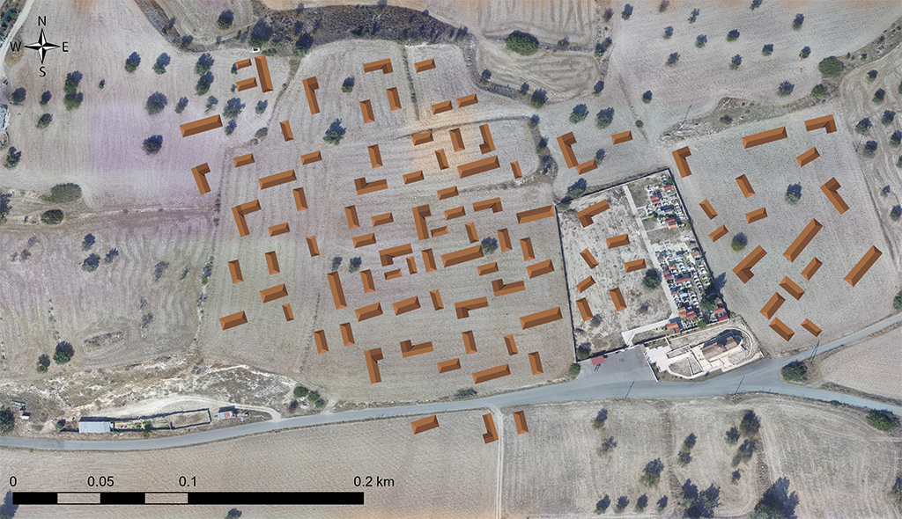

The area around the three-aisled basilica of Panagia was the location of a large early Byzantine village (5th-7th century AD), which survived until the end of the Late Middle Ages (16th century). The settlement was identified by the SeSaLaC archaeological field project through the large concentration of surface potsherds (broken pieces of pottery) between Panagia and the church of Agios Herakleios to the north-west.
Η περιοχή περιμετρικά της τρίκλιτης βασιλικής της Παναγίας υπήρξε θέση μεγάλου χωριού των πρωτοβυζαντινών χρόνων (5ος–7ος αιώνας μ.Χ.), με διάρκεια ζωής μέχρι και τον ύστερο μεσαίωνα (16ος αιώνας). Τη θέση κατέγραψε η αρχαιολογική έρευνα πεδίου του προγράμματος SeSaLaC στην κοιλάδα του Ξερού μέσα από τη μεγάλη συγκέντρωση οστράκων (θραυσμάτων κεραμικής) μεταξύ της Παναγίας και του ναού του Αγίου Ηρακλείου στα βορειοδυτικά.
Panayia'nın üç koridorlu bazilikasının etrafındaki alan, Geç Orta Çağ'ın (MS 16. yüzyıl) sonuna kadar ayakta kalan büyük bir erken Bizans köyünün (MS 5.-7. yüzyıl) yeriydi. Yerleşim, SeSaLaC arkeolojik alan projesinin sırasında, Panayia kilisesinin ile kuzeybatıdaki Ayios İraklios kilisesi arasında bulunan kırık çanak çömlek parçalarının yoğunlaşmasıyla tespit edildi.
The core of the village measured 5 hectares, it provided housing to about 80-100 families and it extended to the west, north and east of Panagia. This church comprised one of the rural basilicas of the wider area and functioned as the religious and economic centre of early Byzantine Kophinou and other smaller rural settlements in the Xeros valley.
Ο πυρήνας του χωριού είχε έκταση 5 εκταρίων, παρείχε στέγη σε 80-100 περίπου οικογένειες και εκτεινόταν στα δυτικά, βόρεια και ανατολικά της Παναγίας. Ο ναός αποτελούσε μία από τις αγροτικές βασιλικές της ευρύτερης περιοχής και το θρησκευτικό και οικονομικό κέντρο της πρωτοβυζαντινής Κοφίνου και άλλων μικρότερων οικιστικών θέσεων στην κοιλάδα του Ξερού.
Köyün çekirdeği 5 hektar büyüklüğündeydi, yaklaşık 80-100 aileye konut sağladı ve Panayia kilisesinin batısına, kuzeyine ve doğusuna uzanıyordu. Bu kilise, daha geniş bölgenin kırsal bazilikalarından biriydi ve erken Bizans Kofinu'nun ve Xeros vadisindeki diğer küçük kırsal yerleşimlerin dini ve ekonomik merkezi olarak işlev görüyordu.
You can get an idea of the Byzantine village and its layout by looking at the reconstruction of part of the settlement, east of the sanctuary of Panagia. The rural houses of the period were simple elongated structures, with one or two rooms, free-standing, L-shaped or in a row, creating open-courtyards for the daily activities of each extended family.
Ανατολικά του Ιερού Βήματος μπορείτε να δείτε αναπαράσταση μέρους του χωριού. Οι αγροτικές οικίες της περιόδου ήταν απλές και στενόμακρες, μονόχωρες ή δίχωρες, αυτόνομες, σε σειρά ή σε σχήμα Γ, δημιουργώντας ανοιχτές αυλές για τις καθημερινές δραστηριότητες κάθε εκτεταμένης οικογένειας.
Panayia kutsal alanının doğusundaki yerleşimin bir kısmının yeniden yapılanmasına bakarak Bizans köyü ve yerleşim planı hakkında fikir edinebilirsiniz. Dönemin kırsal evleri, bir veya iki odalı, bağımsız, L şeklinde veya arka arkaya, her geniş ailenin günlük faaliyetleri için açık avlular oluşturan basit uzun yapılardı.
The number of sherds from large jars (for the storage of agricultural produce) and Cypriot amphorae (for the transport of products), the settlement’s proximity to the Xeros river (located 1.5 km east) and the surrounding fertile agricultural lands suggest that the inhabitants of the Byzantine village were mainly engaged in agriculture and the promotion of agricultural goods to coastal towns in Cyprus and beyond through the sea.
Ο μεγάλος αριθμός οστράκων από πιθάρια (για την αποθήκευση της αγροτικής παραγωγής) και κυπριακούς αμφορείς (για τη μεταφορά προϊόντων), η πρόσβαση σε νερό μέσω του Ξερού (που βρίσκεται 1.5 χιλιόμετρο ανατολικά) και οι μεγάλες και εύφορες αγροτικές εκτάσεις, καταδεικνύουν ότι οι κάτοικοι του βυζαντινού χωριού ασχολούνταν κυρίως με τη γεωργία και την προώθηση αγροτικών προϊόντων σε πόλεις της Κύπρου και εκτός αυτής διά της θαλάσσιας οδού.
Büyük kavanozlardan (tarımsal ürünlerin depolanması için) ve Kıbrıs amforalarından (ürünlerin taşınması için) çıkan çömlek kırığı sayısı, yerleşimin Kseros nehrine (1,5 km doğuda yer alan) yakınlığı ve çevredeki verimli tarım arazileri, Bizans köyünün sakinlerinin ağırlıklı olarak tarımla ve tarım ürünlerinin Kıbrıs'ın kıyı kentlerine ve deniz yoluyla ötesine tanıtılmasıyla uğraştığını göstermektedir.